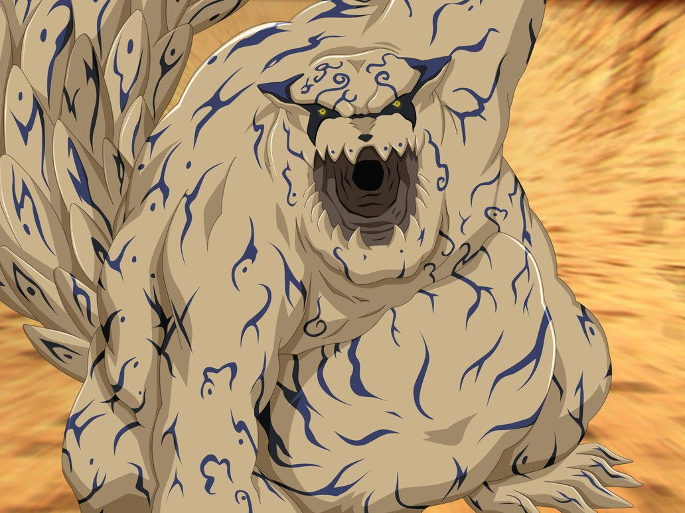
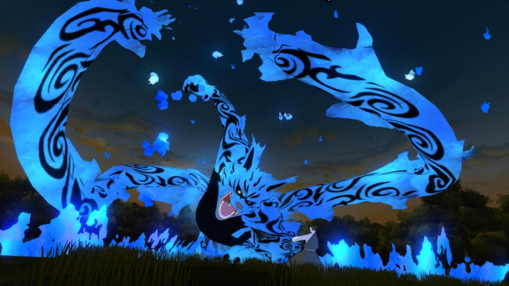
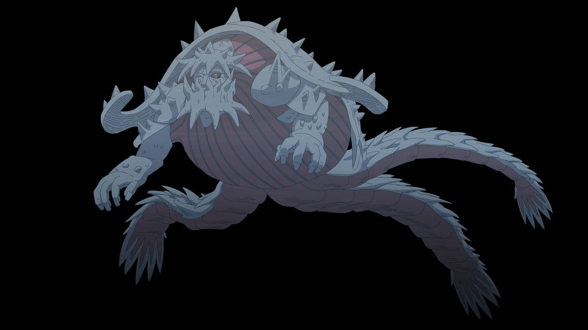

Shukaku (Ichibi)

Shukaku, también conocido como el Una Cola , es una de las Bestias con Cola creadas por el Sabio de los Seis Caminos y una bestia que ha estado sellada dentro de tres jinchūrikis a lo largo de su existencia, siendo Gaara, el Quinto Kazekage de Sunagakure, el más reciente.
Matatabi(Nibi)

Matatabi, conocido como el Dos Colas, es una Bestia con Cola que fue sellado en Yugito Nii de Kumogakure. Matatabi fue capturado por Hidan y Kakuzu y sellado por Akatsuki, luego fue liberado por la Gran Alianza Shinobi
Isobu(Sanbi)

Isobu, también conocido como el Tres Colas, es una Bestia con Cola que fue sellada en Rin Nohara y, después de la muerte de esta, dentro de un jinchūriki llamado Yagura Karatachi, más conocido como el Cuarto Mizukage. Tras la muerte de esté último y su posterior resurrección quedó en libertad hasta que fue capturado por Deidara y Tobi y sellado por Akatsuk